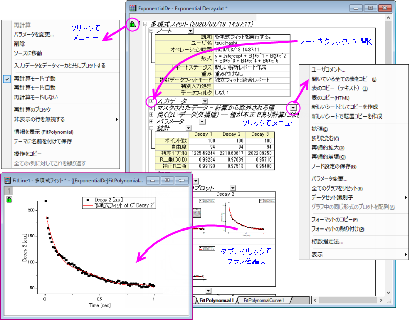
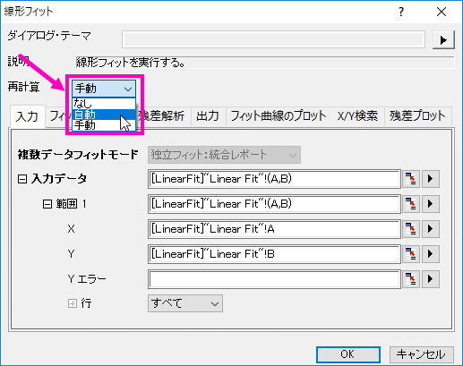
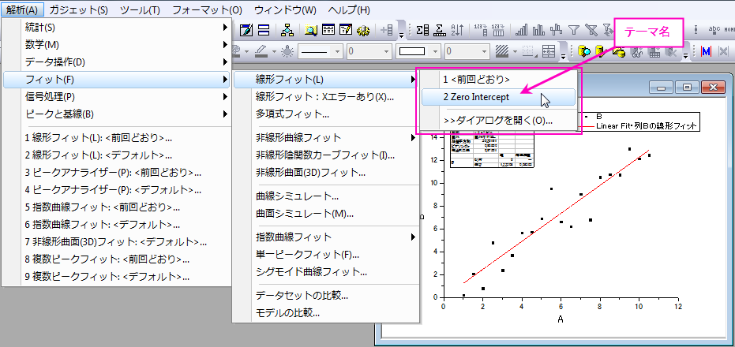
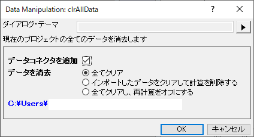
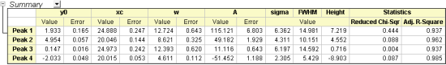
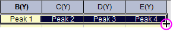
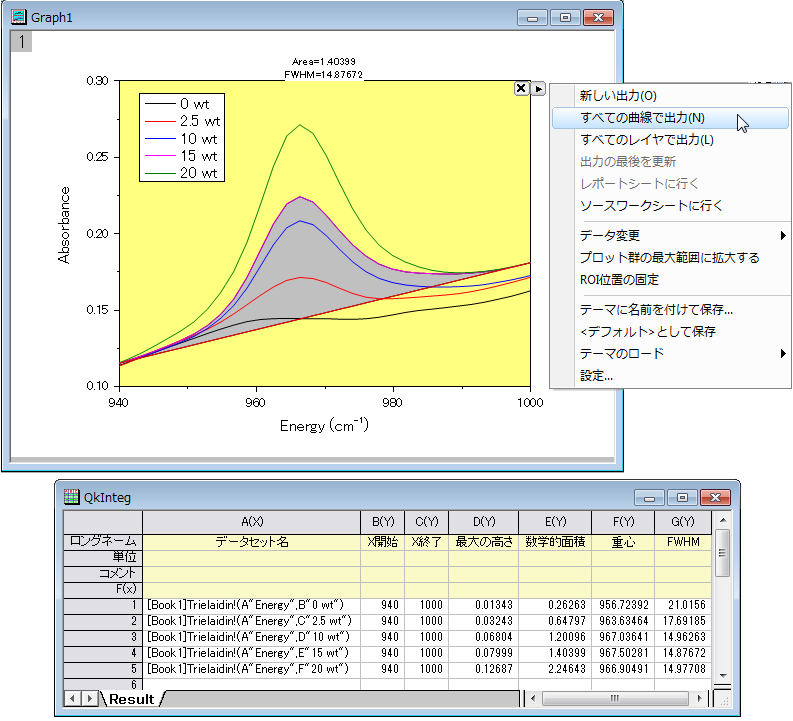
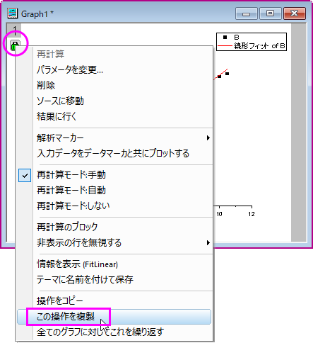
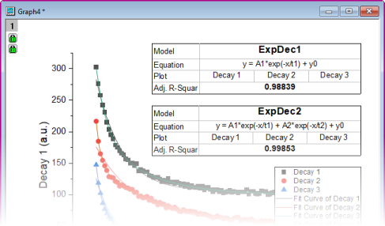
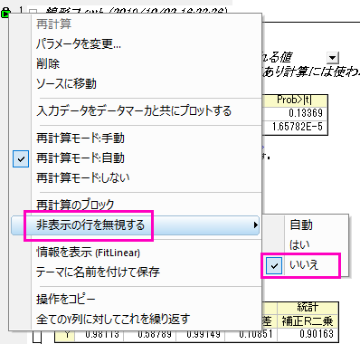

繰り返し処理の方法
Automate-Repetitive-tasks
Originの自動化
バッチ処理
解析レポートシートの作成
- 
解析の章または統計の章にリストされているツールで実行されるような分析操作は、詳細な解析レポートシートを作成します。
- 解析レポートシートは、ツリー構造でまとめられたテーブルを含みます。
- 各ブランチを開いたり、閉じたりして、各テーブルを表示、非表示することができます。
- このテーブルは、静的なレポートではありません。これらは、特定の分析結果にリンクされたプレースホルダーを使用して構築されるため、入力データや分析の設定を変更して結果を再計算できます。
- シートにコメントを追加したり、テーブルをコピーして、プロジェクト内の他のウィンドウに貼り付けたり、リンクを貼り付けたりできます。
- 解析レポートシートは、多くの場合、フィット曲線や残差プロットといった埋め込みグラフを含みます。これらのグラフを編集するには、ダブルクリックします。すると、埋め込みグラフが個別のグラフウィンドウとして開き、ミニツールバーや作図の詳細を使用して編集可能です。編集後、閉じるボタン
 をクリックすると、レポートシートに再度グラフを挿入できます。
をクリックすると、レポートシートに再度グラフを挿入できます。
解析レポートシートの詳細は、Originヘルプファイルをご覧ください。
再計算
結果の再計算Originにある、全ての分析、および、ほとんどのデータ処理ダイアログボックスには、再計算 再計算コントロールがあります。このコントロールを使用すると、出力操作をソースデータに結び付けることができます。再計算を自動または手動に設定すると、ソースデータの変更による更新が準備されます（手動の場合は保留中）これにより、ひと続きのデータをインポートし、既存データと置き換えるといった方法で、複数データセットの分析を実行できます。また、再計算機能は、分析テンプレートを作成する際のベースになります。分析テンプレートについては、下のセクションで説明します。
自動再計算 手動再計算 ロック, 再計算
- 
再計算 の制御は3モードあります：
| なし
|
- 出力結果には錠前アイコンが表示されません。
- 入力データが変更されても、出力結果は更新されません。
|
| 自動
|
- 出力結果を含む列やグラフに、自動の錠前アイコン
 が表示されます。メイン操作の錠前アイコンは、最も左の列に表示されます。メイン操作の右側にある関連する操作の列には、「+」アイコン が表示されます。メイン操作の錠前アイコンは、最も左の列に表示されます。メイン操作の右側にある関連する操作の列には、「+」アイコン が表示されます。 が表示されます。
- 入力データが変更されると、出力結果が自動的に更新されます。
- 錠前アイコンをクリックしてダイアログを開き再計算モードを変更するなど、分析設定を変更することもできます。
|
| 手動
|
- 結果列や、出力結果を含むグラフに、手動の緑色の錠前アイコン
 が表示されます。メイン操作の右側にある関連する操作の列には、「+」アイコンが表示されます。 が表示されます。メイン操作の右側にある関連する操作の列には、「+」アイコンが表示されます。
- 黄色いロック
 は、入力データが変更されたが、再計算操作が保留中であることを示します。黄色いロックをクリックし、ショートカットメニューから再計算を選択すると、更新を個別にトリガすることができます。 標準ツールバーの黄色の再計算ボタン は、入力データが変更されたが、再計算操作が保留中であることを示します。黄色いロックをクリックし、ショートカットメニューから再計算を選択すると、更新を個別にトリガすることができます。 標準ツールバーの黄色の再計算ボタン をクリックして、保留中の操作をすべて更新することもできます。 をクリックして、保留中の操作をすべて更新することもできます。
- 錠前アイコンをクリックしてダイアログを開き再計算モードを変更するなど、分析設定を変更することもできます。
|
再計算操作の管理のヒント
- 錠前アイコン上でクリックするとメニューが表示され、パラメータの変更、ソースデータ開く、結果シートへの切り替え、再計算モードの変更などのオプションを利用できます。
- 再計算ボタンが標準ツールバーにあります。全てのプロジェクト操作が行われている場合は緑色
 、保留中の再計算操作がある場合は黄色で表示されます。プロジェクトを開いて、再計算ボタンが黄色の場合は、計算が保留中であり、プロジェクトに表示されているデータとデータのプロットが最新でない可能性があることがわかります。
、保留中の再計算操作がある場合は黄色で表示されます。プロジェクトを開いて、再計算ボタンが黄色の場合は、計算が保留中であり、プロジェクトに表示されているデータとデータのプロットが最新でない可能性があることがわかります。
- 錠のアイコンが灰色のとき
 、この操作はOriginProのみで有効であり、現在のウィンドウまたはプロジェクトは通常版Originで開かれていることを示しています。この操作は通常版Originではサポートされていませんので、解析の再計算を行う場合はOriginProライセンスのあるコンピュータをご利用ください。
、この操作はOriginProのみで有効であり、現在のウィンドウまたはプロジェクトは通常版Originで開かれていることを示しています。この操作は通常版Originではサポートされていませんので、解析の再計算を行う場合はOriginProライセンスのあるコンピュータをご利用ください。
- 錠前アイコンが赤く表示された場合は何かが発生し、再計算操作が不可能になります。このような条件はまれですが、たとえば、ユーザー定義のカーブフィッティング操作を含むプロジェクトファイルを同僚に渡したけれども、ユーザー定義のフィッティング関数に合致しなかった場合などに発生します。
- プロジェクトファイルに再計算操作を多数含めると、作業が遅くなる可能性があります。錠前アイコンをクリックしてポップアップメニューから再計算をブロックを選択すると、再計算を手動でも自動でも再計算をブロックできます。保留中の再計算にブロックを配置すると、チェーン内の関連する各操作に黄色のブロックアイコンが表示されます。更新済の再計算にブロックを配置すると、チェーン内の関連する各操作に緑色のブロックアイコンが表示されます。ブロックを削除するには、ブロックアイコンをクリックしてチェックマークをクリアします（標準ツールバーの黄色の再計算ボタンをクリックすると、ブロックされた操作は更新されません）。
- すべての再計算を一時停止するには、Ctrl+0を押すか、解析：自動再計算を一時停止（ワークシートのみ）を選択するか、標準ツールバーの自動再計算を一時停止ボタン
 をクリックします。
をクリックします。
- グラフをクリックし、メインメニューから表示：表示様式を選択したあと、錠前アイコンの横にあるチェックマークをクリアすることで、グラフウィンドウの錠前アイコンを非表示にすることができます。これにより、関連する操作はグラフウィンドウから削除されません。アイコンを再表示するには、再度上記の操作をします。
ダイアログテーマ
ダイアログボックステーマ テーマ, ダイアログボックス 分析ダイアログや、データ操作のダイアログのほとんどは、設定内容をダイアログテーマファイルとして保存できます。一度保存すれば、必要に応じて保存したダイアログテーマを呼び出して使用することができます。また、1つのダイアログに対し、複数のテーマファイルを保存できるので、データセットに対し異なる設定で繰り返し分析を行う際に便利です。
前回使用したダイアログ設定は、＜前回どおり＞というテーマとして自動的に保存されます。また、カスタムした設定は、デフォルトテーマ＜デフォルト＞として保存することもできます。名前を付けて保存したテーマやデフォルトテーマ、前回どおりテーマは、ダイアログボックスのテーマフライアウトメニューからアクセスできるほか、分析のダイアログを開く際に表示されるメニューから使用することもできます。

ダイアログテーマの管理は、ツールメニューのテーマ・オーガナイザを使用して行います。

|
チュートリアル：ダイアログテーマの保存と使用方法
- Samples\Curve FittingフォルダからLinear Fit.datファイルをインポートします。
- B列を選択し、メインメニューから解析：フィット：線形フィットと選択します。
- 線形フィットダイアログが開いたら、フィットオプションの切片固定チェックボックスにチェックを付け、切片固定：テキストボックスに0を入力します。
- ダイアログテーマの隣にある、
 ボタンをクリックし、名前を付けて保存を選択します。テーマ名として、Zero Intercept と入力し、OKボタンをクリックします。線形フィットダイアログでも、OKボタンをクリックし、フィットを実行します。結果シートFitLinear1とFitLinearCurve1がワークブックに追加されます。 ボタンをクリックし、名前を付けて保存を選択します。テーマ名として、Zero Intercept と入力し、OKボタンをクリックします。線形フィットダイアログでも、OKボタンをクリックし、フィットを実行します。結果シートFitLinear1とFitLinearCurve1がワークブックに追加されます。
- ソースデータシートを開き、C列を選択してメインメニューから解析：フィット：線形フィットと選択します。先ほど保存したテーマZero Interceptを含む、いくつかのテーマ名がフライアウトメニューに表示されます。
- 保存したテーマを選択します。C列に対し、テーマとして保存された設定を使用した線形フィットが実行されます。ここでは、ダイアログは開かずに実行されます。
|
 | テーマを操作するためのヒント
- SHIFTキーを押しながらメインメニューにあるテーマをクリックして、ダイアログテーマの設定がロードされたダイアログを開くことができます。
- ダイアログのデフォルトテーマは、システムデフォルトと呼ばれます。解析ダイアログのフライアウトメニューをクリックしてシステムデフォルトを選択し、ロードします。
- 分析ダイアログ内のフライアウトメニューをクリックして、削除を選択し、編集した＜デフォルト＞テーマを含む作成したテーマを削除します。
- すべての分析ダイアログにおける、編集した＜デフォルト＞テーマは、User FilesフォルダのDefaults.xml に保存されます。これを削除すると、解析ダイアログ全てのシステムデフォルト設定が元に戻ります。
|
プロジェクト/ワークブックテンプレート
テンプレート、ワークブック
テンプレート、プロジェクト
単一のブックまたはプロジェクト全体を「テンプレート」ファイルとして保存する理由はいくつかあります。いくつかの典型的な例を示します。
- 列指定の繰り返しパターン（例：XYyError、XYyErrorなど）を持つ固定数の列を持つデータファイルをインポートすることで、これらのファイルをインポートするためだけのカスタムブックを作成できます（ファイル：テンプレートの新規保存）。
- 同様の構造のデータファイルを定期的にインポートし、そのデータに対して通常のグラフ作成および分析操作を実行します。次に、ワークシートまたはブックを埋め込んだノートウィンドウを使用してレポートを生成します。これは分析テンプレートの典型的な例です（ファイル：ワークブックを分析テンプレートとして保存）。
- 前の例で説明した操作と似た操作をいくつか実行しますが、保存時にすべてのデータがワークブックから消去され、分析に使用する参照値のシートが破壊されるため、ワークブックを分析テンプレートとして保存できません。 。代わりに、インポートしたデータのみを消去してワークブックをウィンドウファイルとして保存することを選択できます（ファイル：ウィンドウの新規保存）。これは参照データのシートを保持し、分析テンプレートと同様に、ワークブックによる分析とグラフ作成の操作を節約します。
- あなたは定期的にデータをインポートし、何らかの分析を行い、そしてレポートを作成し、そして分析テンプレートの概念を利用したいと思うとします（箇条書きの2番目のように）。しかし、ワークブックに埋め込めないレイアウトウィンドウなど、プロジェクトには複数のウィンドウがあります。そのため、1つのワークブック分析テンプレートではうまくいきません。この場合は、「クローン」を作成してプロジェクトをデータなしで保存できます（ファイル：現在のプロジェクトのクローンを作成）。
ワークブックをテンプレートとする
ワークブックには、データ、メタデータ、浮動グラフまたは埋め込みグラフ、埋め込み行列とメモ、スクリプト、変数およびその他のサポートデータを含むワークシートを含めることができます。組込みグラフ、Originテンプレート
ワークブックは、グラフ作成や分析処理を繰り返し実行するためのテンプレートとして使用することができます。必要に応じて、ワークブック（OGWU）、テンプレート（OTWU）、または分析テンプレート（OGWU）としてブックを保存する3つのオプションがあります。
- ワークブック（OGWU）：ファイル：ウィンドウの新規保存ですべてのブックの内容を保存します。
- 分析テンプレート（OGWU）：ファイル：ワークブックを分析テンプレートとして保存を選択すると、保存前にブック内の分析操作で使用されるすべてのデータ列が消去されます。分析操作に関連付けられていないデータと同様に操作が保存されます。分析テンプレートテンプレート、分析s
- テンプレート（OTWU）：ファイルの選択：テンプレートの新規保存でワークブックの構造、およびワークブックに存在する分析操作は保存されますが、これらの分析操作に関連付けられていないデータを含むすべてのデータは消去されます。
| 新しいブックダイアログは、ワークブック、行列ブック、および分析テンプレートを管理するためのテンプレートライブラリです。ダイアログボックスの機能の概要については、ワークブックを参照してください。
|
|
|
チュートリアル：分析テンプレートの作成
- 新しいワークブックを開き、Samples\Curve Fitting\Sensor01.datファイルをインポートします。
- 列Bを選択し、解析：フィット：線形フィットメニューを選択し、線形フィットダイアログを開きます。
- 再計算ドロップダウンから自動を選択します。
- フィット制御タブの切片固定チェックボックスにチェックを付け、切片固定テキストボックスに0を入力します。
- OK をクリックしてダイアログを閉じ、線形フィットを実行します。
- 「はい」をクリックしてレポートシートFitLinear1 に切り替え、最適なフィット曲線や残差のグラフを含む結果を表示します。
- データシートに戻り、ファイル Samples\Curve Fitting\Sensor02.dat をインポートします。すると、新たなデータに対し、フィット処理が行われ、結果が自動的に更新されます。このワークブックを続けて使用、あるいは、ワークブックウィンドウのタイトルバーを右クリックしてデータなしで複製を選択してフィット操作を含む新しいワークブックを作成し、ほかのデータのインポートに利用可能です。これにより、ワークブックに新しいデータをインポートし、必要があれば、複数ワークブックのプロジェクトを保存します。
- ワークブックをアクティブにして、メニューからファイル：ワークシートを分析テンプレートとして保存を選択します。ダイアログが開いたら、Linear Fit of Sensor Data などの名前を付け、保存をクリックします。
- ファイル: 最近使ったブックメニューを選択し、前のステップで保存したテンプレートを選択します。すると、データなしのワークブックが開きます。
- ファイル Samples\Curve Fitting\Sensor3.dat を空のシート（1つ目のシート）にインポートします。データをインポートすると解析結果は自動で生成されます。
|
分析テンプレート には、サマリーシートとカスタムレポートシート（ワークシート・ベースまたはHTML）を含めることができます。これは分析ルーティンのインポート、分析、プロット、およびレポートのための理想的な媒体となります。バッチ処理ツールツールと組み合わせて使用すると、任意の数のデータファイルに対して一連の分析とグラフ化操作を繰り返し、処理されるたびにそれぞれに対してPDFサマリーレポートを作成できます。この章のバッチ作図とバッチ分析のセクションでは、繰り返し処理を実行する際のワークブックテンプレートの使用方法を紹介しています。
| ノートウィンドウでHTMLをサポートするようになりました。ノートウィンドウをワークブックに追加して（シートタブを右クリックしてシートとしてメモを追加）、分析テンプレートにHTMLレポートを簡単に組み込むことができます。詳細は、ノートウィンドウからHTMLレポートを作成をご覧ください。
|
プロジェクトをテンプレートとする
Originのプロジェクトファイルは、特に1つのワークブック内で分析とグラフ作成のタスクを解決できない場合に、繰り返しのグラフ作成と分析のタスクを実行するための「テンプレート」としても使用できます。
「プロジェクトテンプレート」を作成するための基本手順は次のとおりです。
- ワークブックのデータから、グラフ作成や分析を行い、プロジェクトとして保存します。
- プロジェクト保存後、ファイル：現在のプロジェクトのクローンを作成を選択します。クローンプロジェクトを設定するための小さなダイアログが開きます。
- 
- データコネクタを追加：このボックスにチェックして、クローン作成するプロジェクトから保存されたプロジェクトへのデータコネクタを追加します。複製された各ワークシートは、保存されたプロジェクトの元のワークシートへの接続を持ちます。クローンプロジェクトの他の同様のファイルからデータをインポートする場合は、このボックスをクリアしてください。
- 全てクリア：インポートしたデータのみをクリアします。分析操作はクローンプロジェクトに保存されます。
- インポートデータをクリアして計算を削除：インポートされたデータと分析操作を消去します。
- OKを押してクローンプロジェクトを作成します。選択したデータが消去され、UNTITLEDという名前のクローンプロジェクトがワークスペースに追加されます。
- クローンプロジェクトに名前を付けて保存し、さらにデータファイルを処理する準備ができたら、それを開いて新しいデータをインポートできます。
- 分析およびグラフ作成操作が定期的に更新される特定のデータファイルのセットにリンクされている場合は、必ずしもコネクタを使用する必要はありません。簡単にファイルを再インポートすることができます（データ：再インポート...または直接再インポート)。
- 操作がデータコネクタを使用してリンクされている場合は、コネクタアイコン
 をクリックし、ポップアップメニューからインポート （このコネクタのみ）または全てインポート（ブック内のすべてのコネクタ）を選択します。
をクリックし、ポップアップメニューからインポート （このコネクタのみ）または全てインポート（ブック内のすべてのコネクタ）を選択します。
- 一つの方法は、すべてのデータを単一のOriginプロジェクトファイルに保存することです。クローンプロジェクトから元のプロジェクトにデータコネクタを追加した場合は、グラフ作成および分析操作を実行するために必要なデータのみを選択的にインポートできます。完了したら、クローンプロジェクトを再利用できるようにして、ファイルに新しい名前を付けて保存できます。
バッチ作図
バッチ作図
Originには、複数データセットやファイルから、それぞれのグラフを作図する方法がいくつか用意されています。以下の2セクションでは、（1）既存のワークシートデータまたは、（2）複数のデータファイルから、複数グラフを作成する方法を説明します。なお、これら2通りの方法のほか、LabTalkスクリプトやOrigin Cを使用したバッチ作図の方法も可能です。
他のブック/シート/列データを使用してグラフを複製
ワークブック、ワークシート、列などが、同様のデータ構造の場合、グラフを複製することができます。ウィンドウ：複製（バッチ作図）メニューで新しいデータを使ってグラフを複製します。以下の2つの場合があります。
- 単一データでグラフの作成と編集をして、同じワークシート内の別のデータでグラフを複製する場合、ウィンドウ: 複製(バッチ作図): 新しい列で複製を選択します。作図したい他のデータ（列）を指定します。それぞれの列は、新しいグラフとして作図されます。
- １つのワークシートかワークブック内のデータでグラフの作成と編集をして、同じデータ構造の別のワークシートやワークブックにグラフを複製する場合、ウィンドウ: 複製（バッチ作図）: 新しい シートで複製/新しいブックで複製を選択します。Originは似たデータ構造のワークシートやワークブックのすべてを表示します。作図したいワークシートやワークブックを指定します。それぞれのワークシートやワークブックのデータが、新しいグラフとして作図されます。
ワークブックをテンプレートとして複数ファイルを処理
多くのデータでグラフを作成し、最初にワークブックに全てのファイルを作図前にインポートしたくない場合、希望のグラフを作成してから、ワークブックにこのグラフを追加して、ワークブックテンプレートとして保存することができます。このテンプレートを使用すれば、それぞれのグラフと対応するグラフのワークブックを作成して、複数ファイルを処理することができます。
|
|
チュートリアル：複数データファイルからグラフ作成
- 新しいワークブックをアクティブにして、メニューからデータ：ファイルからインポート: 単一ASCIIファイルを選択して、Originのインストールフォルダにある、Samples\StatisticsフォルダのSensor01.dat をインポートします。
- B列を選択して、線＋シンボルグラフを作成します。
- X軸をダブルクリックして、軸ダイアログボックスを開きます。スケールタブをアクティブにします。左パネルの水平と垂直を選択して、再スケールを自動に設定してOKをクリックします。これでデータが変更するとグラフスケールが自動で更新されます。
- ワークシートタブ上で右クリックし、グラフをシートとして追加を選択し、開いたダイアログで、先に作成したグラフを選択し、完了をクリックします。これにより埋め込みグラフを含む新しいワークシートが追加されます。
- データシートを開き、タブをダブルクリックして、シート名をDataに変更します。
- メインメニューから、ワークシート：ワークシートをクリアを選択して、シート内のデータをクリアします。このステップは任意です。データをクリアすることで、次のステップで保存するテンプレートのサイズを小さくしています。
- メインメニューのファイル：ウィンドウの新規保存を選択し、Sensor Data and Graph 等の名前を付けて保存をクリックし、グラフウィンドウを保存します。
- このテンプレートを使用し、複数ファイルを処理します。メニューから、ファイル：バッチ処理を選択します。
- 開いたダイアログで、バッチ処理モードを分析テンプレートをロードに設定し、分析テンプレートとして、保存したテンプレートを指定します。
- データソースをファイルからインポートにし、Samples\Curve Fitting にある、3つのファイルSensor01.dat、Sensor02.dat、Sensor03.datを選択します。
- データシートをDataにし、結果シートをなしにします。
- OK をクリックして、ダイアログを閉じます。これにより、1つ目のシートにインポートデータ、2つ目のシートに対応するグラフを持つ、3つのワークブックが作成されます。シートに埋め込まれたグラフをダブルクリックすれば、グラフウィンドウが開き編集できます。
|
| もし、データインポートの際に、特別なインポート設定が必要なときは、インポートオプションダイアログで、設定をデータシートに保存することができます。これにより複数ファイルに対し、バッチ処理を実行した際には、保存したインポート設定が適用されます。
|
バッチ分析
Originには、複数ファイルやデータ列、データプロットに対して実行できるバッチ分析の機能がいくつか用意されています。
ダイアログで複数データセットを分析
線形フィットや非線形曲線フィットなど、いくつかのダイアログボックスには、複数データセットの分析をサポートしています。これらのダイアログボックスで作成されたレポートシートは、各データセットに対するパラメータ値や、フィット結果の良し悪しなど関連する結果が含まれます。この結果表は別のシートにコピーして、以降の解析処理などに使用することができます。
|
|
チュートリアル：複数データセットをフィットする
- 新しいワークブックを開き、OriginのインストールフォルダにあるSamples\Curve Fitting\Multiple Gaussians.dat をインポートします。
- Y列のロングネームをそれぞれ、Peak 1、Peak 2、Peak 3、Peak 4 とします。
- 4つのY列を選択して、解析：フィット：非線形曲線フィット...メニューを選択し、NLFit ダイアログを開きます。
- 関数ドロップダウンリストから、Gaussを選択し、フィットボタンをクリックしてフィットを実行します。
- FitNL1レポートシートを開きます。それぞれのデータセットに対するフィットパラメータがリストされた概要という表を確認できます。

|
| 概要のとなりにある下向きの矢印ボタン をクリックし、新しいシートとしてコピーを作成を選択します。これにより、全てのセルがレポートシートにリンクされた表のコピーが作成されます。フィット処理を更新したり、変更すると、コピーした表の内容も自動的に更新されます。このシートのデータからグラフを作図することもできるので、フィットパラメータを使用した二次的な解析に使用できます。 をクリックし、新しいシートとしてコピーを作成を選択します。これにより、全てのセルがレポートシートにリンクされた表のコピーが作成されます。フィット処理を更新したり、変更すると、コピーした表の内容も自動的に更新されます。このシートのデータからグラフを作図することもできるので、フィットパラメータを使用した二次的な解析に使用できます。
|
| 上記の手順2で行ったように、列ロングネームを列挙するときは、最初のセル（「ピーク1」など）に文字列を入力し、セルを選択して右下隅にカーソルを合わせます。カーソルが+の表示になったら、ほかのセルにドラッグして最初のセルの内容をほかのセルに拡張します。
- 
|
ガジェットを使用した複数曲線の分析
ガジェット関心範囲(ROI)Originには、作図データをインタラクティブに分析するいくつかのガジェットがあります。ガジェット機能では、分析を行う領域の選択や、分析対象のデータセット変更、分析実行時の様々なオプション設定などが可能です。
また、ほとんどのガジェット機能では、現在のレイヤまたは、グラフページ内にある全てのプロットに対して分析を実行することができます。これにより、同じ設定を使用して、複数データセットに対する繰り返し分析処理を行い、すべてのデータセットに対応する分析結果の表を作成することができます。
|
|
関心領域（ROI）
チュートリアル：積分ガジェットを使用し、複数の曲線を積分する
- Originプロジェクト"Samples\Spectroscopy\Absorbance Spectra.opj" を開きます。
- グラフウィンドウをアクティブにし、メインメニューから、ガジェット：積分を選択します。
- 開いたダイアログで、基線タブを開き、モードドロップダウンリストから直線を選択します。
- 出力タブを開き、出力先の項目にある、ワークシートに追加にチェックを付けます。OK をクリックして、ダイアログを閉じます。
- グラフ内に関心領域（Region of Interest 、ROI）ボックスが配置されます。必要に応じて、ROIをクリックしてサイズを変更し、グラフ内のデータがオブジェクト範囲内に含まれるようにします。積分領域は、暗く表示されます。
- ROIオブジェクトの右上にある矢印ボタン
 をクリックし、コンテキストメニューから、データ変更を選択すると、同一レイヤ内にある他のプロットを対象に積分が実行できます。ここで、現在のベースラインの設定が他の曲線に対しても適用されることに注意してください。 をクリックし、コンテキストメニューから、データ変更を選択すると、同一レイヤ内にある他のプロットを対象に積分が実行できます。ここで、現在のベースラインの設定が他の曲線に対しても適用されることに注意してください。
- 矢印ボタンをクリックして、すべての曲線で出力 (N)、または、Nキーを押します。すべての曲線に対して積分が実行されます。
- 矢印ボタンをクリックし、メニューからレポートシートに行くを選びます。レポートシートが開き、すべての曲線に対する積分結果が表示されます。

|
分析テンプレートを使用したバッチ処理
分析テンプレート
テンプレート, 分析
分析レポート
レポート, 分析
バッチ処理ツールを使用すると、分析テンプレートを使用して複数ファイルやデータセットに対する分析を実行できます。1つのファイルに対して分析を実行し、同一ワークブックに分析結果やレポートシートなどを含め、分析テンプレートとして保存します。そして、バッチ処理ツールはこのテンプレートを使用して複数ファイルまたはデータセットを処理します。それぞれのファイルやデータセットのワークブックを残すオプションや、分析テンプレートを作成した際にあらかじめ設定可能なサマリー表（結果パラメータや、メタデータを含む）を作成するオプションを使用できます。
| ワークブックを分析テンプレートとして保存する操作は任意です。Originプロジェクト（.opj）として保存すれば、ワークブック内のデータを置き換えるだけで、すべての結果やグラフや自動更新されます。また、バッチ処理ツールには、アクティブなウィンドウに繰り返しインポートを行うオプションが用意されているため、分析やグラフを含む既存ブックをバッチ処理のためのテンプレートとして、使用することができます。
|
| カスタムMS Word テンプレートを使って、分析レポートをバッチ生成できます。オプションでレポートごとにPDFあるいはMS Wordファイルを出力することができます。また、レポートを単一ファイルとして統合することができます。レポート用にWordテンプレートを使ったバッチ処理についての詳細は、このチュートリアルを参照してください。
|
他のデータセットやプロットを繰り返し分析
一部の解析処理は、1つのデータセットやデータプロット上で分析を実行したのち、他のすべてのデータに対して処理を繰り返すことができます。この機能は、解析処理に関連した錠前アイコンをクリックして開くショートカットメニューから利用可能です。
- ワークシート列やレポートシートの場合、錠前アイコンをクリックし、メニューからこの分析をすべてのY列に繰り返すを選択します。これにより、ソースデータシートにある他のYデータについて繰り返し分析が実行されます。
- グラフの場合、錠前アイコンをクリックし、メニューからこの分析をすべてのプロットに繰り返すを選択します。これにより、レイヤが複数あっても関係なく、同じグラフページ内の全てのデータプロットに対して分析が実行されます。
この機能は、入力データとして1つのデータセットしか扱うことのできないスムージングや補間といったダイアログボックスで特に便利です。全てのデータが同一ワークシート内または、同一グラフ内に存在している限り繰り返し分析を実行できます。
 | Origin 2022bでの変更についての注意: 以前のバージョンでは、元の分析出力が新しいシートまたはブックを作成した場合、すべてに対してこれを繰り返すと、残りのY列またはプロットに対して新しいシートやブックが作成されました。しかし、元の出力設定に関係なく、すべての出力を1つのシートにまとめたいという要望がありました。そこで、共通のXデータセットを入力列にしている場合、Xデータセットは一度だけ出力シートに書き込まれるようになりました。以前の動作に戻すには@RAO = 0 を設定します(デフォルトは1)。
|
|
|
チュートリアル：ワークシート内の複数データ列のスムージング
- Samples\Curve Fitting\Multiple Gaussians.dat を空のワークブックにインポートします。
- B列を選択して、解析: 信号処理: スムージングを選択してsmoothダイアログを開きます。
- デフォルトの設定のまま、OKをクリックして、スムージングを実行します。スムージングされたデータと、新しい列が追加されます。
- 錠前アイコンをクリックして、この分析をすべてのY列に繰り返すを選択します。C列からE列のデータより、同じ設定でスムージングされた３列のデータが作成されます。
|
この操作を複製
Originの分析操作によって生成された出力は、特定の分析および特定の分析パラメータのセットによってそのソースデータにリンクされます。このリンクは、分析出力に「操作ロック」を配置することによって示され、ユーザが特定の操作の再計算をオフにしない限り、このような結果は通常、編集に対して「ロック」されます。この章のセクションの分析レポートシートと再計算について読むことで詳細を知ることができます。
分析出力に配置されたロックアイコンをクリックしてメニューを開くと、分析後の操作パラメータやその他の情報にアクセスできます。これには、パラメータの変更をクリックして開く、分析出力の生成に使用されるダイアログボックスとパラメータセットが含まれます。
このメニューの下の方に、この操作を複製メニューがあります。
- 
この機能の有益な使用法はの1つは、次のようになります。
- データプロットに対して分析操作を実行します。たとえば、非線形曲線フィット（NLFit）を使用したフィット操作です。
- どのフィット関数が自分のデータを最適にモデル化するかわからないため、当てはまりそうな関数を使用してフィットを試みます。
- 結果の操作ロックをクリックして、この操作を複製を選択します。
- 重複分析が実行され、2番目の操作ロックがグラフウィンドウに追加されます。
- 2番目の操作ロックをクリックし、パラメータの変更を選択し、NLFitダイアログが開いたら、別のフィットを選択して、新しいフィット操作を実行します。新しい近似演算により、最初の近似関数の近似によって生成された出力と比較できる新しい出力が生成されます。
- 
データフィルタを使用した繰り返し分析
繰り返し処理のデータフィルタ繰り返し処理、フィルタ
大量な列データセットのうちの、1列またはそれ以上の列に対してフィルタを適用すれば、素早くデータを削減できます。このデータフィルタ機能と、colcopy(列コピー)のXファンクションを組み合わせて使用することにより、同じソースデータを異なる条件のもとでフィルタリングすることができます。また、フィルタをかけたデータに対し、分析処理を実行でき、複数の条件におけるグラフや分析結果を比較することが可能です。
ソースデータシートから選択した列は、子シートとしてコピーを作成でき、フィルタ条件は、親シートと同期するか、子シートに固定するか選択できます。 ソースデータが更新されると、すべての同期されている子シートと関連するグラフや分析結果は、それぞれのフィルタ条件の元で自動的に更新されます。更に、特定の子シートのフィルタ条件を、親シートに戻すことができます。
下図は、いくつかの自動車メーカーのデータが入力されたソースワークブックです。2つのワークブックは、自動車メーカーを特定するフィルタ条件をかけた、列のサブセットが入力されています。さらに、これらのデータに対して線形フィットを実行しているので、それぞれの条件での分析結果を比較可能です。

| デフォルトで、分析操作の入力である列にデータフィルタがある場合、フィルタデータ（非表示の）行は分析で無視されます。非表示行を含めるには、解析のカギのアイコンをクリックして非表示の行を無視するをいいえ にします。
- 
|
プログラミングによる自動化
Originのプログラミング
これまで説明したような、インターフェースによる自動化手法Originの自動化に加え、グラフ作成と分析機能はLabTalkスクリプトやOrigin C、Python（内部または外部）からもアクセスすることができます。グラフテーマやテンプレートにアクセスして、分析テンプレートを組み込むこともできます。例えば、予めユーザインタフェースを使用して、いくつかの処理について手動でテンプレート（グラフテンプレートや分析テンプレート™など）を作成し、必要に応じてこのテンプレートを呼び出すようなコードを記述することができます。
Originでのプログラミングオプションについては、ユーザーガイドのプログラミングの章を参照してください。 プログラミングに関する詳しい情報については、この章にあるリンクで確認できます。
参考